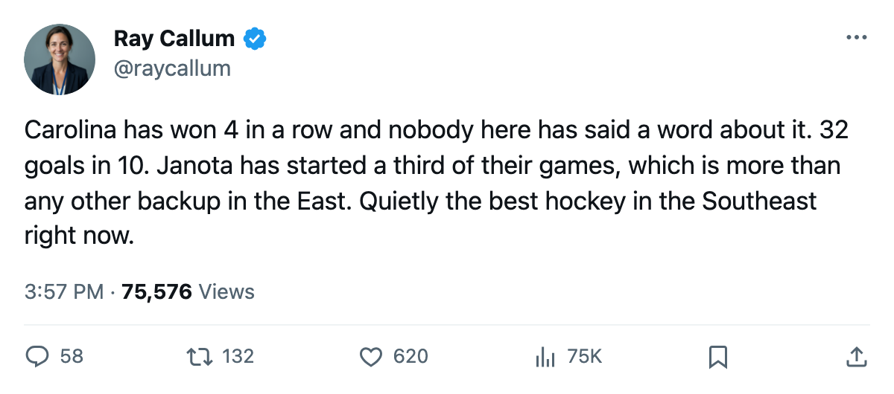

Notes from the East: Carolina Has Won 4 Straight and Scored 32 Goals in 10
The Hurricanes sit 6th in the conference, and no Eastern backup goaltender carries a bigger share of the starts than Marcel Janota.
 Ray CallumSenior correspondent · Home Ice Network
Ray CallumSenior correspondent · Home Ice NetworkThe piece
 Carolina Hurricanes beat
Carolina Hurricanes beat  Detroit Red Wings 3-1 on Tuesday, outshooting Detroit 20-18, to make it 4 straight wins. The Hurricanes sit at 28 points, 6th in the Eastern Conference. They have scored 32 goals in their last 10 games, tied with
Detroit Red Wings 3-1 on Tuesday, outshooting Detroit 20-18, to make it 4 straight wins. The Hurricanes sit at 28 points, 6th in the Eastern Conference. They have scored 32 goals in their last 10 games, tied with  Toronto Maple Leafs for the most by any Eastern club over that stretch.
Toronto Maple Leafs for the most by any Eastern club over that stretch.
Carolina has allowed 69 goals in 24 games, the most by any club in the Eastern Conference's top 6. They win because they outscore you.
Carolina Hurricanes carries 15 injury spells and 81 days lost this season.  Steve Rucchin80 is the only man on the shelf, out until December 19 with an elbow injury. He carries a 76 overall grade from the Bureau's Book, and his absence removes a top-six center during the hottest stretch of Carolina's season.
Steve Rucchin80 is the only man on the shelf, out until December 19 with an elbow injury. He carries a 76 overall grade from the Bureau's Book, and his absence removes a top-six center during the hottest stretch of Carolina's season.
The goaltending split nobody in the East matches
 Kevin Weekes88 has started 17 of Carolina Hurricanes's 24 games. Marcel Janota79 has started 8, a 33% share. No backup goaltender in the Eastern Conference carries a larger workload. The two cover every start between them.
Kevin Weekes88 has started 17 of Carolina Hurricanes's 24 games. Marcel Janota79 has started 8, a 33% share. No backup goaltender in the Eastern Conference carries a larger workload. The two cover every start between them.
Carolina is 9-7 at home and 4-4 on the road. The home record is the engine, and the club is winning enough at RBC Center to stay in the top 8.
Back-to-back on the road
Carolina Hurricanes visits  Nashville Predators on Saturday and
Nashville Predators on Saturday and  Florida Panthers on Sunday. The Predators are 7-1 at home. The Panthers are 6-4 at home.
Florida Panthers on Sunday. The Predators are 7-1 at home. The Panthers are 6-4 at home.
Carolina has 58 games left. At 6th in the conference, the Hurricanes sit 1 point ahead of  New York Islanders and
New York Islanders and  Tampa Bay Lightning for the last playoff position, a race that will be tight into March. The wins over Detroit Red Wings, who are 4th in the Central, count for something in a conference where the margin between 6th and 9th is 3 points.
Tampa Bay Lightning for the last playoff position, a race that will be tight into March. The wins over Detroit Red Wings, who are 4th in the Central, count for something in a conference where the margin between 6th and 9th is 3 points.
